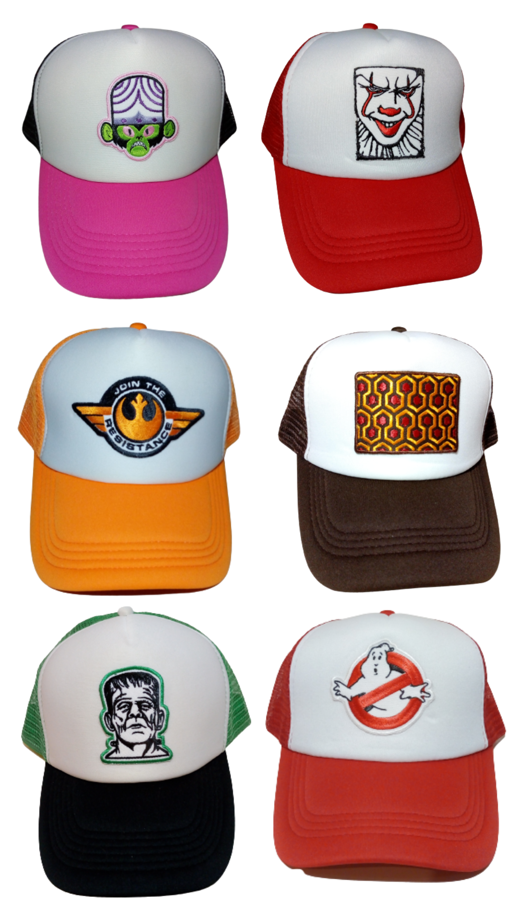

Gallo de Agua
Somos una empresa textil familiar y trabajamos en el mercado local e internacional haciendo productos de alta calidad hace más de 30 años. Estamos especializados en Headwear (gorros tejidos -beanies- y gorras de tela -caps-) hace más de 15 años.
Nuestro negocio nació como forma de dar respuesta a la creciente demanda que teníamos de parte del mercado skater, surfer, del montañismo (outdoors), de otros deportes extremos o alternativos y del fashion/urbanwear y el interés por especializarnos en un producto que está muy desarrollado en el mundo

Nos encantan los accesorios, hemos aprendido mucho en nuestras experiencias de exportación al primer mundo y hemos adquirido a lo largo de los años una calidad y diseño que nos distinguen
Nuestro equipo de trabajo está conformado por la gerencia comercial/administrativa/productiva/logística y un gran grupo de tejedoras, tejedores, confeccionistas y trabajadores textiles. Además contamos con la colaboración de excelentes proveedores, tanto de hilados como de avíos.
